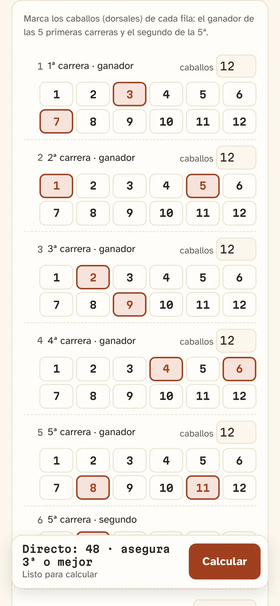
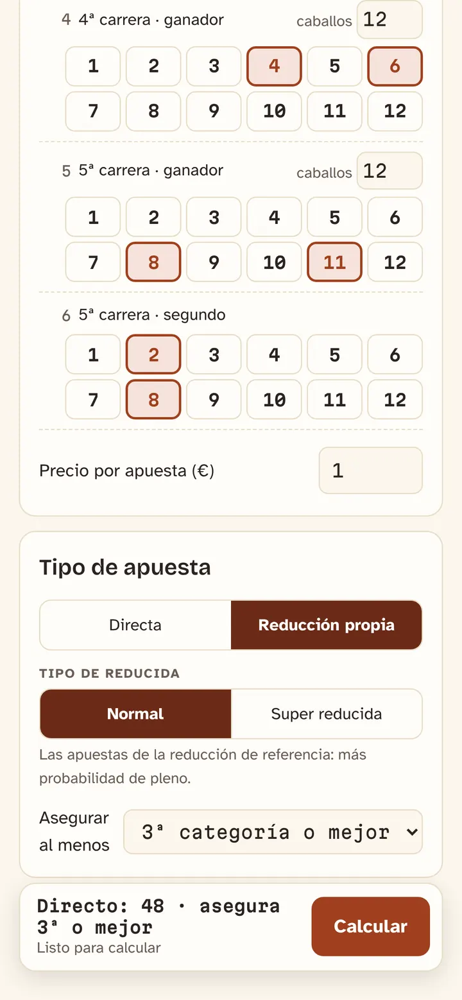

Quíntuple Plus
App independiente. Combinario no es oficial ni tiene relación con Loterías y Apuestas del Estado (SELAE). No vende apuestas: solo te ayuda a prepararlas, y se validan y se pagan en un punto de venta. Solo para mayores de 18 años.
En la app se llama CombiQuintu. Marcas el caballo ganador de las 5 primeras carreras y el segundo de la 5.ª carrera.
Marcar los caballos
Hay una fila de dorsales por carrera. En cada fila puedes poner cuántos caballos corren y marcar uno o varios.


Tipo de apuesta
- Directa: todas las combinaciones.
- Reducción propia: eliges el premio que quieres asegurar si aciertas entre tus caballos: 1.ª categoría (5 ganadores y el 2.º), 2.ª o mejor (los 5 ganadores), 3.ª o mejor (4 ganadores y el 2.º) o 4.ª o mejor (4 ganadores). Normal o Super, como en los demás juegos.
El máximo de un boleto son 2.500 apuestas; la app avisa antes.
Cómo se cuentan las apuestas de la directa: multiplica cuántos caballos marcas en cada una de las 4 primeras carreras, y por las parejas posibles de ganador y segundo de la 5.ª (un caballo no puede ser ganador y segundo a la vez). Por ejemplo, 2 caballos en la 1.ª y en la 2.ª, 1 en la 3.ª y en la 4.ª, y en la 5.ª un ganador con dos posibles segundos: 2 × 2 × 1 × 1 × 2 = 8 apuestas (8,00 €).
Caballos retirados
En Escrutinio › «Caballos retirados» escribes los dorsales retirados de cada carrera. La app aplica la norma de Loterías: la apuesta pasa al dorsal inmediatamente anterior; si se retira el 1, al dorsal más alto de esa carrera.